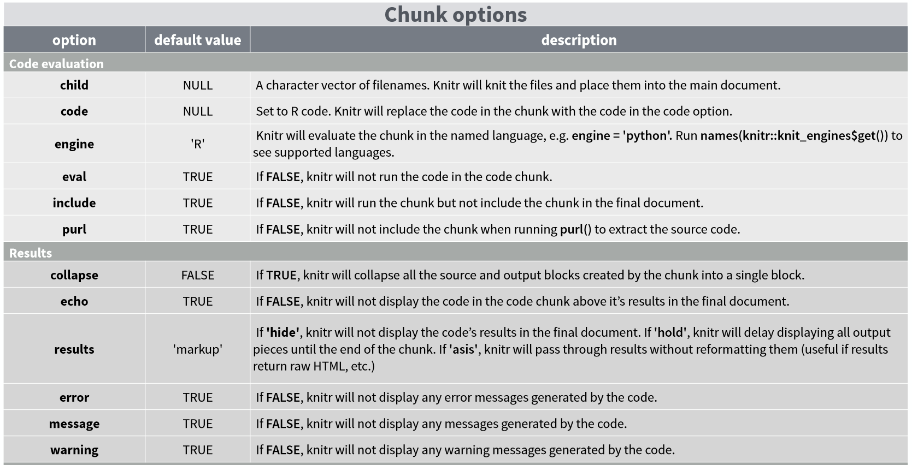

Dynamic Reports
Objetives
Be able to document data management and analysis in R
Familiarize with the Rmarkdown/quarto format for dynamic reports
Packages to use in this manual:
0.1 Reproducibility Crisis in Science
Most procedures (including data analysis) in scientific studies cannot be replicated.

Sharing data and analysis transparently and thoroughly documented, in formats that can be reproduced by other researchers, is one of the main tools for dealing with this problem.

Gallagher et al. 2020. Nature Eco & Evo
Programmatic tools like R naturally tend to facilitate reproducibility since the code of an analysis can be easily recorded and shared. Many programming languages allow the generation of dynamic reports, which are fundamental for handling reproducible data and statistical analyses. Dynamic reports often contain all the necessary information for other researchers to replicate all the analysis steps that generated the results of scientific articles. Therefore, they are an indispensable tool for improving reproducibility in science.
In R, the most popular tool for generating dynamic reports is Rmarkdown/quarto. Rmarkdown can be described as “an electronic documentation format that facilitates the creation of documents, presentations, and dynamic reports from R”. Quarto is an open-source scientific and technical publishing system. R Markdown and quarto are in escence very similar. They both use markdown language and both generate documents with R code blocks (“chunks”) embedded between lines of text. When the document is processed, these blocks are evaluated (if the user desires) and the results are “printed” in the document according to certain conventions.
0.1.1 Advantages of Dynamic Reports with Rmarkdown/quarto:
R code can be embedded in the report, so there is no need to maintain the report and R code separately.
Including R code directly in a report provides an intuitive structure for reproducing the analyses.
The text of the report is written as normal text, so no programming knowledge (i.e. R or HTML) is required to understand it.
The result is an HTML file (or PDF) that includes images, code blocks with R commands, the results of these codes, and text. No additional files are needed, everything is embedded in the HTML file.
Reports are easy to share via email or publish online (e.g. www.rpubs.com).
These reports facilitate collaboration and improve reproducibility (understanding the analyses is much easier when there is explanatory text, R code, code results, and graphics in the same file).
They are easily updated to include new analyses and/or integrate new data.
1 Create R Markdown Documents
We will use Rstudio to create R Markdown documents. Start by selecting “R Markdown …” in the dropdown menu that appears when you create a new file:

Note: you may be prompted here to install several necessary packages for R Markdown to work.
A window will appear asking for a title and author for the new document (this is not so relevant at this point and can be easily modified later), as well as the format. Select ‘HTML’ as we are interested in converting it to a universally viewable format. You can change your output preferences from ‘HTML’ to ‘PDF’ or ‘Word’ at any time:
This will take you to your first ‘.Rmd’ or ‘.qmd’ file (or R Markdown/quarto file). The new file already comes with a template with basic instructions:

1.1 Exercise 1
Create a new R Markdown file, write some lines of text, and click “Knit” to see how your report will look.

2 Markdown Syntax
Markdown (and by extension Rmarkdown/quarto) has its own syntactic rules. However, this language is relatively simple and easy to master:
2.1 Create Headers of Various Sizes
Code:

Result:
3 Header 1
3.1 Header 2
3.1.1 Header 3
3.2 Text Options
Code:

Result:
Make text bold, italic, strikethrough, or superscript
3.3 Add an Image
Code:
Result:

We can also add an image using the include_graphics() function from the knitr package.
Code:
Result:

Note that this option allows us to use the arguments of the code block dedicated to plotting, making it a more flexible option.
3.4 Create Links (‘Hyperlinks’)
Code:

Result:
Create a link to figshare
3.5 Exercise 2
2.1 Create some headers and sub-headers in your Rmarkdown/quarto document
2.2 Add text with some words in bold and in italics
2.3 Embed an image of your favorite organism (or a gif)
2.4 Add a URL link
3.6 Embed Code
To embed R code, we need to define an area where the code is located. This ‘area’ is known as a code block (or ‘chunk’) and is defined by:

Note that the R box is gray, while the rest is white. Everything included in the segment is evaluated and displayed according to the specifications, although these can be modified.
For example, we can add a new column to the example iris dataset:

Result:
| Sepal.Length | Sepal.Width | Petal.Length | Petal.Width | Species | random.var |
|---|---|---|---|---|---|
| 5.1 | 3.5 | 1.4 | 0.2 | setosa | 0.5997 |
| 4.9 | 3.0 | 1.4 | 0.2 | setosa | -1.9905 |
| 4.7 | 3.2 | 1.3 | 0.2 | setosa | -0.6590 |
| 4.6 | 3.1 | 1.5 | 0.2 | setosa | 0.6077 |
| 5.0 | 3.6 | 1.4 | 0.2 | setosa | -0.4623 |
| 5.4 | 3.9 | 1.7 | 0.4 | setosa | -0.7149 |
When your document is processed, the code segment is displayed in a gray box and the results of that code are displayed in a white box. What if you only want the output of your code to be displayed? Or that your code is displayed but not actually executed? There are arguments you can add to each of your blocks to specify these and other options:
3.7 Hide Code
Add the argument echo=FALSE
Code:
Result:
| Sepal.Length | Sepal.Width | Petal.Length | Petal.Width | Species | random.var |
|---|---|---|---|---|---|
| 5.1 | 3.5 | 1.4 | 0.2 | setosa | 1.5076 |
| 4.9 | 3.0 | 1.4 | 0.2 | setosa | 0.7296 |
| 4.7 | 3.2 | 1.3 | 0.2 | setosa | 0.5644 |
| 4.6 | 3.1 | 1.5 | 0.2 | setosa | -1.3816 |
| 5.0 | 3.6 | 1.4 | 0.2 | setosa | -1.1268 |
| 5.4 | 3.9 | 1.7 | 0.4 | setosa | 0.8366 |
You can see that the code is hidden but the results are displayed.
This guide on code block options can be very useful:

This link details all the available arguments for customizing code blocks.
3.8 Embedding Graphics
Graphics can be embedded in Rmarkdown/quarto documents simply by using plotting functions as you would in a normal R script.
3.8.0.1 Code:

3.8.0.2 Result:

3.9 Exercise 3
3.1 Use the eval, collapse arguments with different values (TRUE or FALSE) in a segment where you run head(iris). How does it affect the result?
3.2 Do the same with the out.width, fig.width, dpi, and fig.height arguments in a segment that creates a plot. How does it affect this time?
3.10 Embedding R Code in Text
You may have noticed throughout this tutorial that I have small snippets of text that look like “code blocks”. This is known as code embedding in text.
This can be done in two ways:
3.10.0.1 1. Giving text the appearance of a code segment:
3.10.0.2 Code:

3.10.0.3 Result:
The average sepal length is mean(iris$Sepal.Length)
3.10.0.4 2. Evaluating code in text
3.10.0.5 Code:

3.10.0.6 Result:
The average sepal length for setosa is 5.006.
4 Additional Resources for Customizing Rmarkdown/quarto Documents
4.1 Metadata (YAML)
There are three basic components of an R Markdown document: the metadata, the text, and the code. The metadata is written between the pair of three hyphens (“- - -”) usually at the beginning of the document. The syntax of the metadata is YAML (YAML Ain’t Markup Language), so it is sometimes also called YAML metadata. Indentation is important in YAML, so you must add it to subfields (with respect to an upper field).
This header shows the most commonly used options in YAML metadata:
This link explains in detail the options available in the YAML header of Rmarkdown/quarto files.
4.2 Emojis
The emo package allows adding emojis when evaluating code:
üá®üá∑
You can also embed it in text üá®üá∑, as we saw earlier ‚¨ÜÔ∏è (ji("up_arrow"))
4.3 Tables with knitr::kable
The knitr package also provides a function to display tabular data in an orderly and ‘clean’ way in dynamic reports:
| Sepal.Length | Sepal.Width | Petal.Length | Petal.Width | Species | random.var |
|---|---|---|---|---|---|
| 5.1 | 3.5 | 1.4 | 0.2 | setosa | 1.5076 |
| 4.9 | 3.0 | 1.4 | 0.2 | setosa | 0.7296 |
| 4.7 | 3.2 | 1.3 | 0.2 | setosa | 0.5644 |
| 4.6 | 3.1 | 1.5 | 0.2 | setosa | -1.3816 |
| 5.0 | 3.6 | 1.4 | 0.2 | setosa | -1.1268 |
| 5.4 | 3.9 | 1.7 | 0.4 | setosa | 0.8366 |
| 4.6 | 3.4 | 1.4 | 0.3 | setosa | -0.3119 |
| 5.0 | 3.4 | 1.5 | 0.2 | setosa | -2.0785 |
| 4.4 | 2.9 | 1.4 | 0.2 | setosa | -1.0620 |
| 4.9 | 3.1 | 1.5 | 0.1 | setosa | 1.3286 |
The kableExtra package complements this function with many tools to customize the format of tables in dynamic reports in R.
4.4 Additional Options in knitr
The opts_knit argument of knitr allows defining global options (applicable to all blocks unless redefined):
4.5 Presentations and Other Formatting Options
Note in the window for creating a new Rmarkdown/quarto document the additional formatting options:

Dynamic reports can be generated in other formats including presentations, PDFs, and Word documents.
4.6 Rmarkdown Templates
The Rmarkdown package can generate results in HTML, PDF, MS Word, R package vignettes, Beamer presentations, and HTML5 documents. Additional formats (or ‘variants’ of these formats) are available in other R packages. Some of those packages are:
- rmdformats
- reveljs
- articles
- tufte
Once these packages have been installed, the new formats will be available through the new Rmarkdown dialog:

5 Interactive Documents
R Markdown documents can also generate interactive content. There are two types of interactive R Markdown documents: HTML Widgets and Shiny applications.
5.1 HTML Widgets
HTML Widgets are implemented with the R package htmlwidgets, which connects JavaScript tools that create interactive applications, such as charts and tables. Several packages using HTML widgets have been developed, such as dygraphs, DT, and leaflet. This site (https://www.htmlwidgets.org) showcases a variety of available widgets as well as instructions on how to develop them.
The following code uses the leaflet package to generate an interactive map:
Código
This is the code block that generated the map:

Note the use of the as.is = TRUE argument in the code block options.
5.2 Shiny Applications
The shiny package creates interactive web applications in R. To call shiny code from an R Markdown document, add ‘runtime’: shiny to the YAML metadata, as in this example:
The following code creates a shiny application within the Rmarkdown document:
Código
ui <- fluidPage(
titlePanel("Example"),
sidebarLayout(
sidebarPanel(
sliderInput(inputId = "bins",
label = "Number of bins:",
min = 1,
max = 50,
value = 30)
),
mainPanel(
plotOutput(outputId = "distPlot")
)
)
)
server <- function(input, output) {
output$distPlot <- renderPlot({
x <- faithful$waiting
bins <- seq(min(x), max(x), length.out = input$bins + 1)
hist(x, breaks = bins, col = "#3E4A89FF", border = "white",
xlab = "Waiting time for next eruption",
main = "Histogram of waiting time")
})
}
# Create Shiny app
shinyApp(ui = ui, server = server)
Note that this application does not work in static Rmarkdown documents. On the shiny gallery site, you can find many examples of shiny applications. These applications are complex to include in self-contained files and therefore are not as user-friendly for dynamic reports as those we can generate with R markdown.
6 Publishing Reports Online with Rpubs
The online platform Rpubs allows you to publish reports in HTML format. This option greatly simplifies sharing code, analysis, and results since you only need to send the URL. Furthermore, you can continue updating the reports, and the same URL will continue to contain the updated versions of the reports.
To send our HTML reports to Rpubs, we must first create an account on the site. After this, we simply have to use the “publish” link in the upper right corner of the reports:

7 Additional Tools for Organizing Data Analysis
7.1 RStudio Projects
RStudio projects create folders where files related to a specific analysis (code and data) are saved and make this folder the default working directory when the project is opened. They can be created like this:
Then a series of windows will appear where you can choose what type of project and its name:
7.2 Research Compendia
Research compendia are pre-defined folder structures that allow for a logical and intuitive organization of the files used and generated in a data analysis of a research project. The [sketchy
](https://marce10.github.io/sketchy/) package generates these compendia, allowing the user to choose from a range of common compendia in the scientific community. This example creates the basic compendium (one of the 14 that come with the package):
Código
Creating directories ...
project_x
│
├── data/
│ ├── processed/ # modified/rearranged data
│ └── raw/ # original data
├── manuscript/ # manuscript/poster figures
├── output/ # all non-data products of data analysis
└── scripts/ # code
Done.The package creates Rmarkdown files with templates for data analysis (folder “scripts”) and manuscript writing (folder “manuscript”). Run path in the R console to see the directory where the compendium was created.
7.3 Exercise 4
Create a dynamic report that includes an interactive map of Costa Rica using the
leafletpackage (remember to addlibrary(leaflet))Reproduce one of the examples available on the dygraphs package site (https://rstudio.github.io/dygraphs/) and embed it in your dynamic report (remember to add
library(dygraphs))Install the
kableExtrapackage and embed in your report the example code from the documentation of thekable_styling()function of that package (remember to addlibrary(kableExtra))Create an Rmarkdown presentation using the “Presentation” option in the creation window
Publish your dynamic report in Rpubs
References
- R Markdown: The Definitive Guide
- Rmarkdown custom format
- Rmarkdown website
- Jacolien van Rij: R Lessons
- Vaidyanathan, Ramnath, Yihui Xie, JJ Allaire, Joe Cheng, and Kenton Russell. 2019. Htmlwidgets: HTML Widgets for R. https://github.com/ramnathv/htmlwidgets.
Session Information
R version 4.3.2 (2023-10-31)
Platform: x86_64-pc-linux-gnu (64-bit)
Running under: Ubuntu 22.04.2 LTS
Matrix products: default
BLAS: /usr/lib/x86_64-linux-gnu/blas/libblas.so.3.10.0
LAPACK: /usr/lib/x86_64-linux-gnu/lapack/liblapack.so.3.10.0
locale:
[1] LC_CTYPE=en_US.UTF-8 LC_NUMERIC=C
[3] LC_TIME=en_US.UTF-8 LC_COLLATE=en_US.UTF-8
[5] LC_MONETARY=en_US.UTF-8 LC_MESSAGES=en_US.UTF-8
[7] LC_PAPER=en_US.UTF-8 LC_NAME=C
[9] LC_ADDRESS=C LC_TELEPHONE=C
[11] LC_MEASUREMENT=en_US.UTF-8 LC_IDENTIFICATION=C
time zone: America/Costa_Rica
tzcode source: system (glibc)
attached base packages:
[1] stats graphics grDevices utils datasets methods base
other attached packages:
[1] tufte_0.13 rticles_0.26 revealjs_0.9 rmdformats_1.0.4
[5] kableExtra_1.4.0 rmarkdown_2.28 sketchy_1.0.3 emo_0.0.0.9000
[9] remotes_2.5.0 leaflet_2.2.1 knitr_1.48
loaded via a namespace (and not attached):
[1] jsonlite_1.8.8 highr_0.11 compiler_4.3.2
[4] crayon_1.5.3 xml2_1.3.6 stringr_1.5.1
[7] assertthat_0.2.1 jquerylib_0.1.4 systemfonts_1.1.0
[10] scales_1.3.0 yaml_2.3.10 fastmap_1.2.0
[13] R6_2.5.1 generics_0.1.3 htmlwidgets_1.6.4
[16] bookdown_0.37 munsell_0.5.1 lubridate_1.9.3
[19] xaringanExtra_0.8.0 svglite_2.1.3 rlang_1.1.4
[22] stringi_1.8.4 xfun_0.47 viridisLite_0.4.2
[25] timechange_0.2.0 cli_3.6.3 magrittr_2.0.3
[28] formatR_1.14 crosstalk_1.2.1 digest_0.6.37
[31] rstudioapi_0.16.0 packrat_0.9.2 lifecycle_1.0.4
[34] vctrs_0.6.5 evaluate_0.24.0 glue_1.7.0
[37] colorspace_2.1-1 purrr_1.0.2 tools_4.3.2
[40] htmltools_0.5.8.1